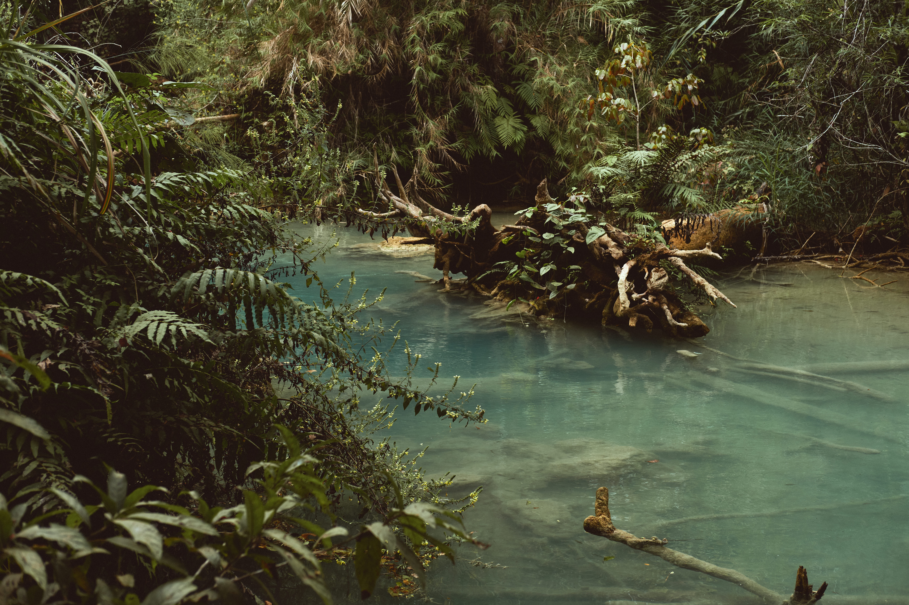
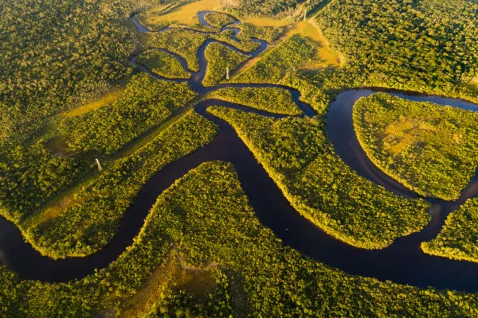

O que é a amazônia?

A Amazônia é uma floresta tropical úmida que se estende pela bacia hidrográfica do rio Amazonas, uma vasta área tropical natural, com dimensão de aproximadamente 6,74 milhões km². Ela percorre oito países: Bolívia, Brasil, Colômbia, Equador, Guiana, Peru e Venezuela.
Sua Abrangência
Mas a Amazônia não é só floresta, é também o mundo das águas. As águas levadas pelo Amazonas ao mar equivalem a quase um sexto de toda a água doce que deságua nos oceanos do mundo.
Um bioma!
Trata-se de um bioma extremamente complexo e dinâmico. A bacia hidrográfica é composta por uma variedade de paisagens e ecossistemas, que incluem florestas tropicais úmidas, florestas inundadas ou várzeas, savanas e uma rede intrincada de rios, lagos e igarapés.